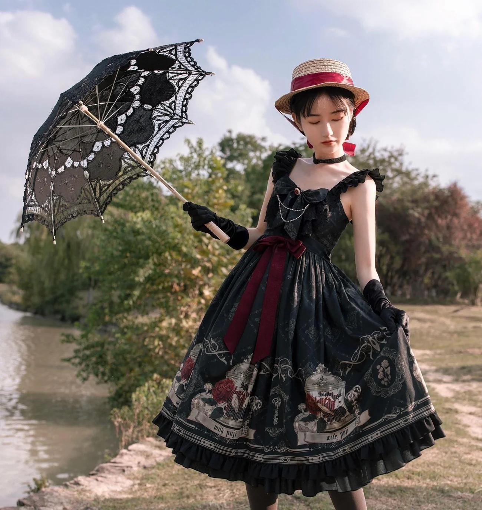
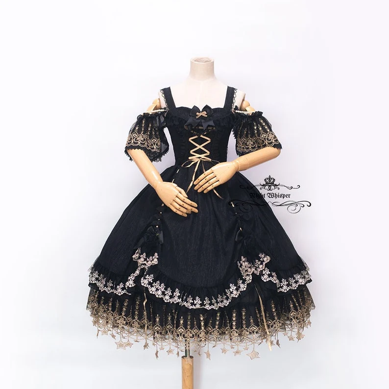
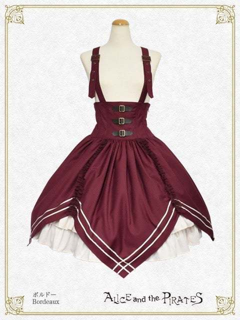

New to Lolita? Watch this video!
First up, for cheap lolita that's cute but will make you sob with tariffs, we have 42lolita!
42lolita sells indie Chinese brands, mostly taobao ones and it marketed for the buyer that does not understand Chinese and is scared of proxy services(aka me). The clothes are really cute and they've got all the basics, so if I'm stocking up on blouses or something then it's pretty much my go-to. The only thing is that it takes a while to arrive, which is why if you're in a rush and worried about tariffs, next up we have:
Lolita Collective!
Lolita Collective is more or less the American equivalent of 42lolita, where they specialize in American brands, and ship from within the U.S. They do resell some taobao products, but the clothes are often a bit more expensive than the ones you'd find on 42lolita or taobao because trump has a personal vendetta against lolitas apparently.
If you're looking for pieces that aren't still being sold directly by the brand, you're gonna have to find them secondhand, which is where you'll find the site where I spend most of my time, Lacemarket!!!
It's the best place on the internet, and no one can tell me otherwise, HOWEVER, in order to talk to sellers or buy anything you have to have a VERIFIED account, which is manually verified by volunteers, so it could happen quickly, or take ages. It's a bit tedious on your end as well, because you either have to email them an id with personal information covered up, or message them on Facebook. It's totally worth it though, and it's also really fun to just look at the dresses that are on the market.
Those are the main places I look when I'm shopping in general, but if I just want to look at clothes, there's no better place than Lolibrary!
Literally every lolita piece that's ever been made is on there. It's awesome. If I could marry it, I would.

With Puji- Nightinggale and Rose JSK from 42lolita

Night Whisper Design- Star Lace Gold x Black Fantasy Dress from Night Whisper Design

Alice and The Pirates- Captain Chris Charming Caper Skirt from Lacemarket